词法分析｜词法单元与正则表达式
Lexical Analysis 词法分析-1
词法分析器的作用
- Lexical Analyzer (词法分析) 是编译器的第一阶段，它
逐字符读取源程序，将它们组成词素，生成并输出一个词法单元(token)序列，每个词法单元对应于一个词素。- 这个词法单元序列被输出到语法分析器进行语法分析。
- 词法分析器通常还要和符号表进行交互。当词法分析器发现了一个标识符的词素时，它要将这个词素添加到符号表中。
- 通常，词法分析器不会一次返回词法单元列表，而是
在解析器向其请求时返回 - 词法分析器 = 扫描+词法分析
- 扫描阶段主要负责完成一些不需要生成词法单元的简单处理，比如删除注释和将多个连续的空白字符压缩成一个字符。
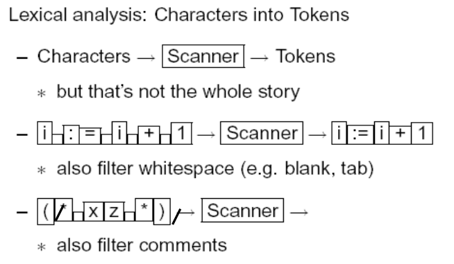 - 词法分析阶段是较为复杂的部分，它处理扫描阶段的输出并生成词法单元。
- 将源程序作为字符文件读取
- 将文件划分为单词(token)
- Token（单词）： 表示源程序中的一个信息单元
- 例如：keywords（关键词/保留字）, identifiers（标识符）, arithmetic symbols, multicharacter symbols(>=, <>)
- 扫描阶段主要负责完成一些不需要生成词法单元的简单处理，比如删除注释和将多个连续的空白字符压缩成一个字符。
- 重点：什么是单词？什么是合法单词？
- 正则表达式中标记的说明和识别
- 如何识别单词 - 有限自动机
- 用C或LEX编程的词法分析器的设计
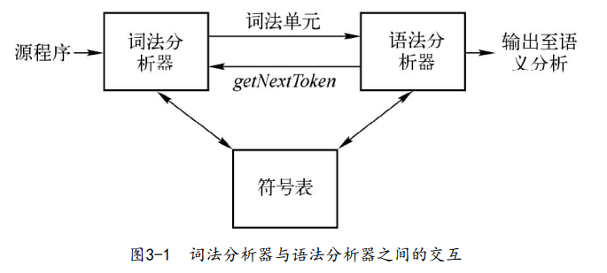
词法分析及语法分析
- 把编译过程的分析部分划分为词法分析和语法分析阶段有如下几个原因：
- 词法分析和句法分析的分离提供了一个更简单的概念模型
- 高内聚、低耦合、并行实现
- 提高编译器效率（I/O 技术可以增强词法分析）
- 增强编译器的可移植性(Portability)。输入设备相关的特殊性可以被限制在词法分析器中。
- 词法分析和句法分析的分离提供了一个更简单的概念模型
词法单元、模式和词素
- Token（词法单元）
- 由一个词法单元名和一个可选的属性值组成
- 词法单元名是一个表示某种词法单位的抽象符号
- 例如：<Identifier>, <number>, etc.
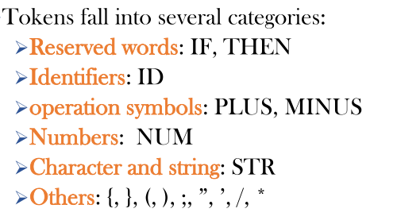
- 例如：<Identifier>, <number>, etc.
- Pattern（模式）
- 描述了一个词法单元的词素可能具有的形式。
- 当词法单元是一个关键字时，它的模式就是组成这个关键字的字符序列。
- 描述了一个词法单元的词素可能具有的形式。
- Lexeme（词素）
- 源程序中的一个字符序列，它和某个词法单元的模式匹配，并被词法分析器识别为该词法单元的一个实例。
词法单元的属性
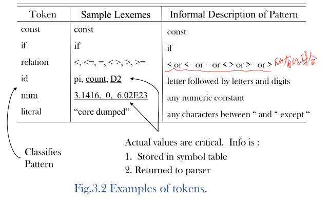
词法单元是扫描中的逻辑单元；词素是词法单元中的一个实例
-
由于一个词法单元可以代表多个词素，因此应该为该特定词素保留其他信息。此附加信息称为词法单元的属性(attribute)
-
假设一个词法单元至多有一个相关的属性值，当然这个属性值可能是一个组合了多种信息的结构化数据。
- 一般来说，和一个标识符有关的信息 —— 例如它的词素、类型、它第一次出现的位置（在发出一个有关该标识符的错误消息时需要使用这个信息）—— 都保存在
符号表中。 - 一个标识符的属性值是一个指向符号表中该标识符对应条目的
指针。
- 一般来说，和一个标识符有关的信息 —— 例如它的词素、类型、它第一次出现的位置（在发出一个有关该标识符的错误消息时需要使用这个信息）—— 都保存在
-
词法单元类型及其属性值唯一标识词素 -
Regular expressions(正则表达式） 广泛用于指定模式。
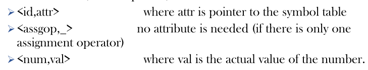
- 词法单元记录的例子：
1 | |
- 一种更常见的安排是：扫描器只返回词法单元的值，并将其他属性放入变量中（例如在LEX和YACC中）。
- 输入字符字符串保存在 缓冲区(buffer) 中，或由系统输入设备提供。
输入缓冲
带哨兵的缓冲I/O(Buffered I/O with Sentinels)
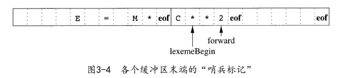
- lexemeBegin指针：该指针指向当前词素的开始处。当前我们正试图确定这个词素的结尾
- forward指针：它一直向前扫描，直到发现某个模式被匹配为止
- “哨兵”（sentinel）字符：
- 可以把对缓冲区末端的测试和对当前字符的测试合二为一
- 哨兵字符必须是一个不会在源程序中出现的特殊字符，一个自然的选择就是字符eof
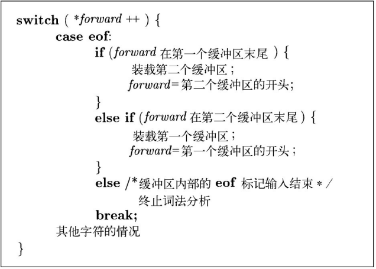
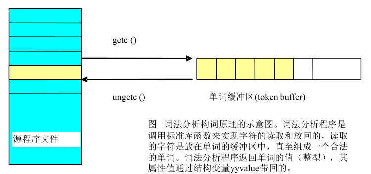
词法单元的规约
串和语言
-
字母表(Alphabet)：是一个有限的符号集合
- 符号的典型例子包括字母、数位和标点符号
- ASCII是字母表的一个重要例子
-
串(String)
- 某个字母表上的一个串是该字母表中符号的一个有穷序列。
- 在语言理论中，术语
“句子”和“字”常常被当作“串”的同义词 - 串s的长度，通常记作
|s|，是指s中符号出现的次数 - 空串（empty string） 是长度为0的串，用表示。
-
串的各部分术语：示例串 S 为 banana
- 串s的前缀（prefix） 是从s的尾部删除0个或多个符号后得到的串。
- ban、banana 和 ∈ 是 banana 的前缀
- 串s的后缀（suffix） 是从s的开始处删除0个或多个符号后得到的串
- nana、banana 和 ∈ 是 banana 的后缀
- 串s的真（true） 前缀、真后缀、真子串分别是 s 的既不等于 ∈，也不等于 s 本身的前缀、后缀和子串
- 串s的子序列（subsequence） 是从s中删除0个或多个符号后得到的串，这些被删除的符号可能不相邻
- baan是banana的一个子序列
- 串s的前缀（prefix） 是从s的尾部删除0个或多个符号后得到的串。
-
串的运算符
- 连接（concatenation）：如果 x 和 y 是串，那么 x 和 y 的 连接（记作xy） 是把 y 附加到 x 后面而形成的串
- 空串是连接运算的单位元，也就是说，对于任何串 s 都有，
- 如果把两个串的连接看成是这两个串的“乘积”，我们可以定义串的“指数”运算：
- 定义 ，并且对于
- 由此可知 ，以此类推
- 连接（concatenation）：如果 x 和 y 是串，那么 x 和 y 的 连接（记作xy） 是把 y 附加到 x 后面而形成的串
- 语言(Language)：一个语言 L 就是是某个给定字母表上一个任意的可数的串集合。
- 根据这个定义，像空集 和仅包含空串的集合都是语言
- 所有可能的标识符集都是一种语言
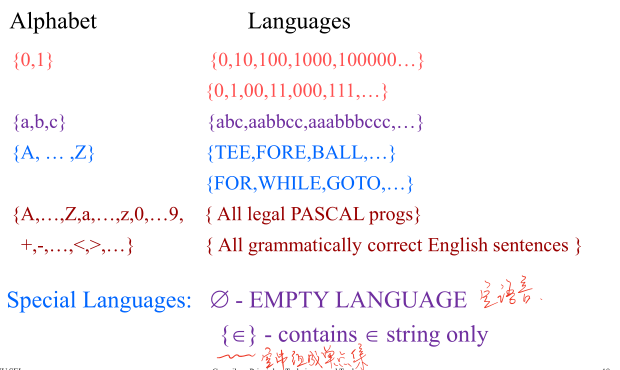
语言上的运算
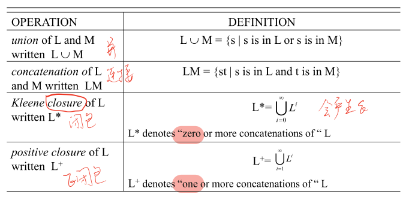
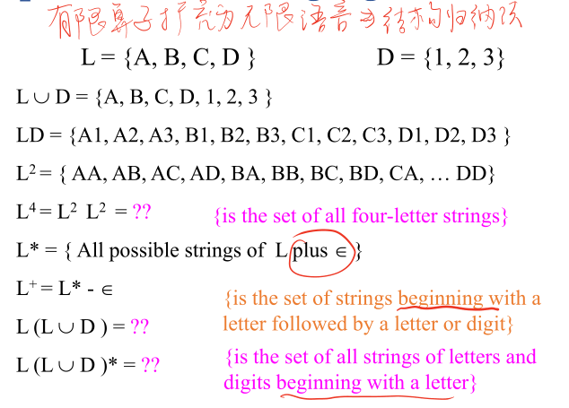
正则表达式(Regular Expressions)
-
正则表达式 是从字母表中构造符号（字符串）序列的一组
规则/技术- 正则表达式可以描述所有通过对某个字母表上的符号应用
并、连接和闭包这些运算符而得到的语言
令 为字母表，r 是一个正则表达式，那么 L(r) 就是以规则 r 为特征的语言
- 正则表达式可以描述所有通过对某个字母表上的符号应用
-
正则表达式可以由较小的正则表达式按照如下规则递归地构建。
- 每个正则表达式 r 表示一个语言 L(r)，这个语言也是根据 r 的子表达式所表示的语言递归地定义的
-
下面的规则定义了某个字母表Σ上的正则表达式以及这些表达式所表示的语言：
- 归纳基础
- ∈ 是一个正则表达式， L(∈) = {∈} ，即该语言只包含空串。
- 如果 a 是 Σ 上的一个符号，那么 a 是一个正则表达式，并且
- 也就是说，这个语言仅包含一个长度为 1 的符号串 a
- 归纳步骤：假定 r 和 s 都是正则表达式，分别表示语言 L(r) 和 L(s)，那么：
- (r) | (s) 是一个正则表达式，表示语言 L(r) L(s)
- (r)(s) 是一个正则表达式，表示语言 L(r) L(s)
- (r) 是一个正则表达式，表示语言 (L(r))
- (r) 是一个正则表达式，表示语言 L(r)
所有这些都是左关联的。优先规则允许删除括号。
- 归纳基础
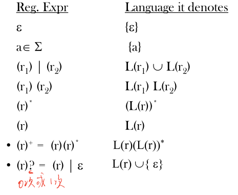
- ? 表示出现 0 次或 1 次
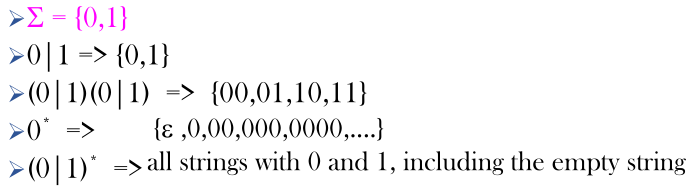
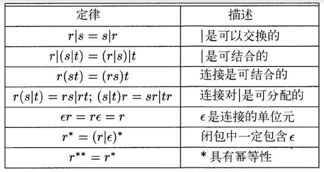
正则定义(Regular Definitions)
- 有些语言的正则表达式可能非常复杂，为方便表示，我们可能希望给某些正则表达式命名，并在之后的正则表达式中用这些名称作为符号来定义其他正则表达式
- 一个 正则定义(regular definition) 是具有如下形式的定义序列
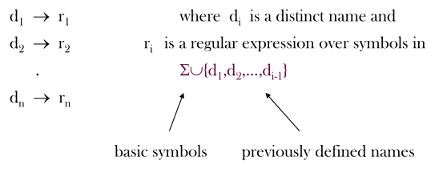
正则表达式的扩展
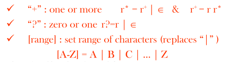
复习
- Lexical analyzer (scanner) 词法分析器
- Syntax analyzer (parser) 语法分析器
- Token 单词
- Attribute 属性
- Regular expression 正规/正则表达式
- Regular definition 正规定义
练习题
3.1
描述下列正规式（正则）定义的语言（请用汉语直白地描述该语言）
- 0 (0 | 1) * 0
- (( e | 0 ) 1*)*
- (0|1)*0(0|1)(0|1)
- 0*10*10*10*
- (00 | 11)*((01 | 10)(00 | 11)*(01 | 10)(00 | 11)*)*
答：
- 以 0 开始并以 0 结束的 0 和 1 组成的数串。
- 0 和 1 组成的数串。
- 倒数第三个数字为 0 的 0 和 1 组成的数串。
- 含且只含三个 1 的 0 和 1 组成的数串。
- 含有偶数个 0 和 1 的 0 和 1 组成的数串。
3.2
为下列语言写出正规定义(或正规式)
- 包含五个元音，且按顺序排列的所有字母串（RE）
- 字母按字典升序排列的所有字母串（RE）
- 以/*开始，*/结束的注释，中间不能包含*/，除非包含在"和"中（RE）
- 不包含重复数字的数字串（正规定义）
- 包含至多一个重复数字的数字串（正规定义）
- 包含偶数个0和奇数个1的0、1串 （正规定义）
答：
-
[bcdfghjklmnpqrstvwxyz]* a ([bcdfghjklmnpqrstvwxyz] | a)* e ([bcdfghjklmnpqrstvwxyz] | e)* i ([bcdfghjklmnpqrstvwxyz] | i)* o ([bcdfghjklmnpqrstvwxyz] | o)* u ([bcdfghjklmnpqrstvwxyz] | u)*
-
A*B*C*…Z*a*b*c*…z*
-
\/\* ( “.*”|\*+[^/]*|[^*"]*)* \*\/
-
正则规定如下：
- d0 -> 0?
- d1 -> 1?
- d2 -> 2?
- d3 -> 3?
- d4 -> 4?
- d5 -> 5?
- d6 -> 6?
- d7 -> 7?
- d8 -> 8?
- d9 -> 9?
- d10 -> d0d1d2d3d4d5d6d7d8d9 | d0d1d2d3d4d5d6d7d9d8 | …
- d10 后有10！个表达式
-
不会
-
正则规定如下：
- e_0_e_1 -> (00|11)((01|10)(00|11)(01|10)(00|11))
- e_0_o_1 -> 1e_0_e_1|0(00|11)*(01|10)e_0_e_1
本博客所有文章除特别声明外，均采用 CC BY-SA 4.0 协议 ，转载请注明出处！